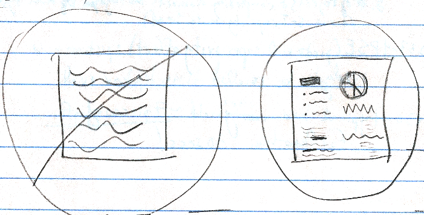

Reading and Words on the Web
So much of your website is WORDS. Can brain science insights help you to use words better on the web? Read these summaries from chapters 17-21 of Michael Eysenck's book on Fundamentals of Cognition, for a few ideas that are relevant to the web development, IA and UX fields.
Chapter 17: Read all about it!
- Reading doesn't always activate the phonological/auditory/subvocal parts of your brain, sometimes it just activates the semantic or meaning-making part of the brain.
- We focus our eyes using rapid jerks (saccades), as mentioned in Colin Ware's book, because we have only a very small area on which we can focus at a time. We need to use white space and gestaltic principles to make it easy for the eyes to get a quick overview of what's on the page.
- Beware the spillover effect (fixation on a particular word lasts longer when the word before it is rare, rather than a common word).
- Words that are read faster/easier include those that are:
- common
- short
- predictable
- frequently-occurring
- Words that are read slower/harder include those that are:
- rare
- unpredictable in the sentence context
- Words that are read faster/easier include those that are:
Chapter 18: What are you saying?
- Pay attention to the egocentric heuristic - a comprehension strategy in which listeners interpret what they hear based on their own knowledge rather than on the knowledge they share with the speaker (common ground).
- People are most likely to use common ground when it is salient/prominent.
Chapter 19: What does this mean?
Interestingly, Giora has a graded salience hypothesis in which people initially choose the meaning of a sentence from among multiple options based on which meaning is the most salient.
Chapter 20: Talking the talk
- We use the following strategies to reduce demands on ourselves and make it easier to speak:
- preformulation: producing phrases used before (i.e. familiar)
- underspecification: producing simplified expressions (i.e. easy)
- Effective communication is observed to use:
- discourse markers: not directly relevant, but helpful to understanding (i.e. "uh", "anyway")
- prosodic cues: stress, intonation, rhythym
Perhaps similar strategies would make it easier for readers to understand textual web content? These markers (or something similar) might also apply to making podcasts and videos easier to understand.
Chapter 21: What's in a concept?
There are a number of ways to teach or model tasks (which are important both for learning and for building expertise). Eysenck lists three ways:
- concepts
- prototypes
- exemplars
I wonder how these ideas could relate to Indi Young's mental models? Also, given that expertise is built these ways, a more familiar model for web interfaces would likely aid customers in more quickly acquiring expertise with your web site.
Bibliography
Eysenck, Michael W. (2006). Fundamentals of cognition. New York: Psychology Press.